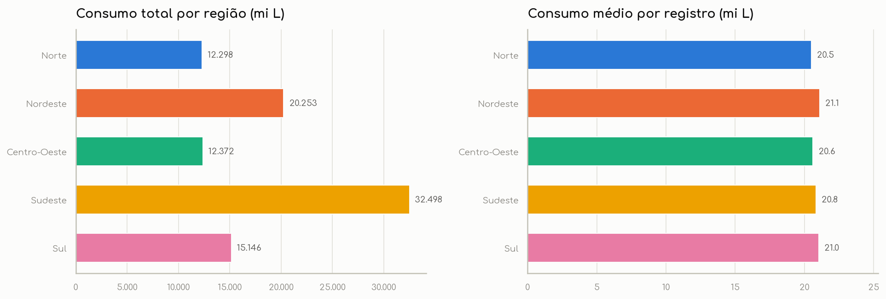
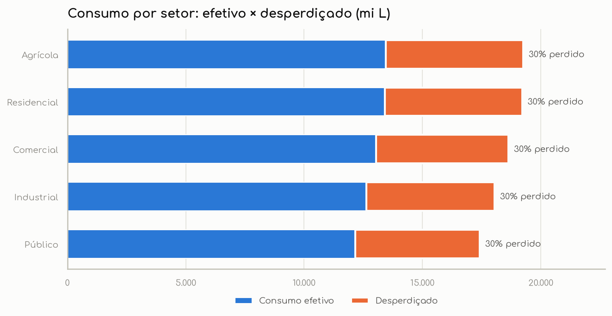
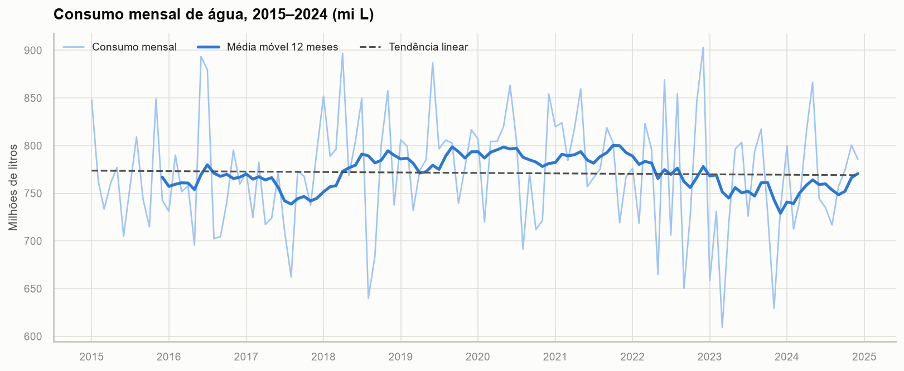
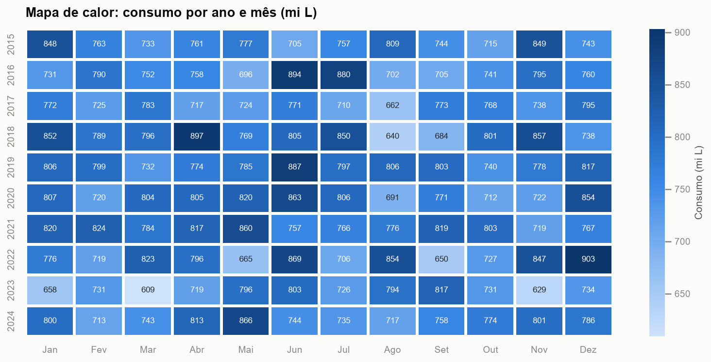
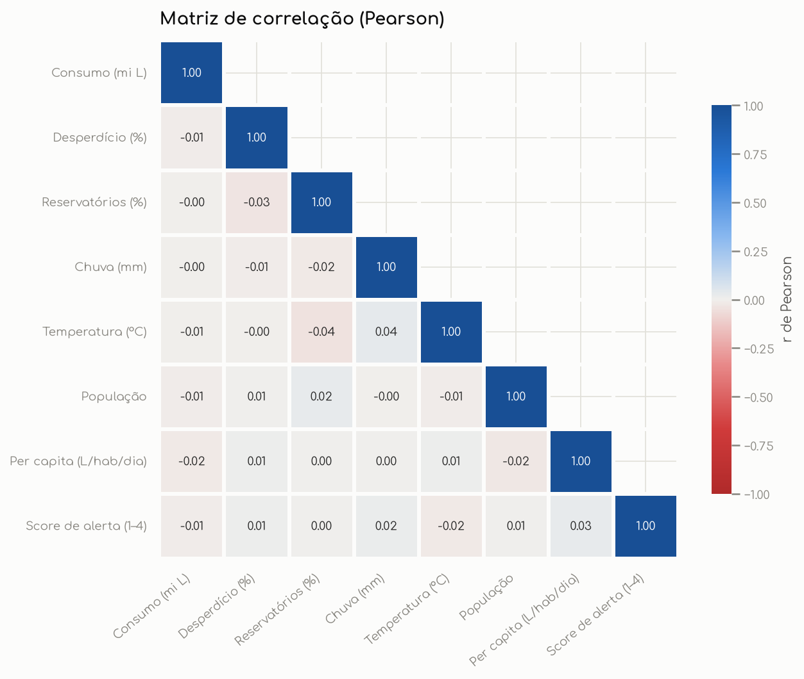
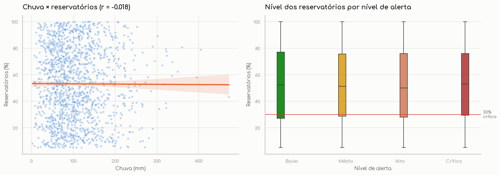
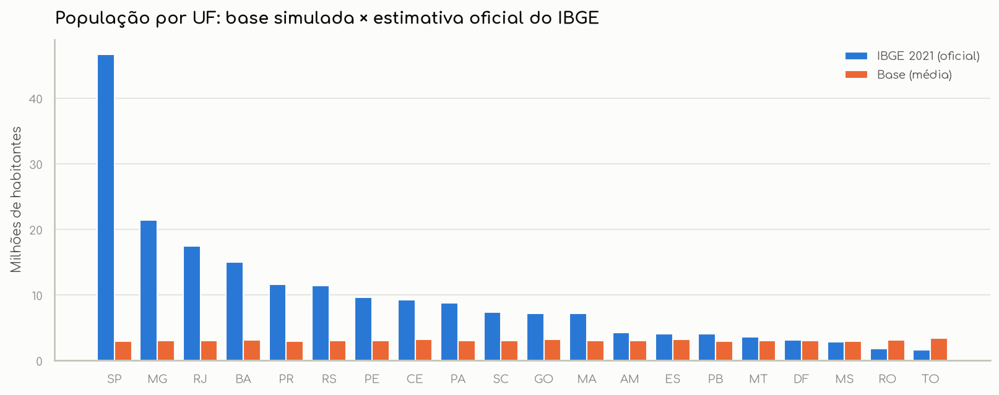

Sobre o projeto
A gestão da água no Brasil precisa equilibrar demanda, perdas na distribuição e disponibilidade dos reservatórios. Este projeto parte de uma base mensal de consumo por estado e setor e passa por todas as etapas de um projeto profissional de dados: preparação, análise exploratória, criação de indicadores, visualização, persistência em banco, integração com dados oficiais e publicação de um dashboard interativo.
Perguntas de negócio
A análise foi guiada por seis perguntas.
Onde se consome mais?
Quais regiões, estados e setores concentram o consumo de água?
Quanto se perde?
Qual o volume desperdiçado e onde o desperdício é mais grave?
Há risco hídrico?
Como estão os reservatórios e com que frequência ocorrem alertas elevados?
Como evolui no tempo?
Existe tendência de crescimento ou sazonalidade no consumo?
O clima explica?
Chuva e temperatura se relacionam com consumo e reservatórios?
Os dados são confiáveis?
As variáveis são coerentes entre si e com dados oficiais do IBGE?
Indicadores analisados
KPIs calculados no notebook e recalculados dinamicamente no dashboard conforme os filtros.
| KPI | Fórmula | Valor (base completa) |
|---|---|---|
| Consumo total | Σ consumo_milhoes_litros | 92,6 bilhões de L |
| Volume desperdiçado | Σ consumo × desperdício% ÷ 100 | 27,9 bilhões de L |
| Taxa de desperdício (ponderada) | volume desperdiçado ÷ consumo total | 30,1% |
| Consumo per capita médio | média de consumo_per_capita | 267 L/hab/dia |
| Nível médio dos reservatórios | média de reservatorios_percentual | 52,2% |
| Registros com reservatório crítico | % de registros com reservatório < 30% | 26,8% |
| Registros em alerta elevado | % com nível de alerta Alto ou Crítico | 50,7% |
| Tendência anual do consumo | inclinação da regressão linear (NumPy) | −0,06% ao ano |
Principais resultados
Gráficos gerados com Matplotlib e Seaborn no notebook. No dashboard, as versões interativas usam Plotly.







Tecnologias utilizadas
Tecnologias obrigatórias da disciplina e recursos avançados.
Funcionalidades intermediárias
- Filtros múltiplos: período, região, UF (dependente da região), setor e nível de alerta
- KPIs dinâmicos com variação em relação ao ano anterior
- Gráficos interativos (Plotly) com tooltips e zoom
- Análise temporal: média móvel, variação anual, tendência e sazonalidade
- Tratamento avançado: validação de esquema e domínio, outliers (IQR), categorias ordenadas
- Integração entre tabelas via JOINs no modelo relacional
- Upload de arquivos CSV com validação
- Dashboard em seções, visualizações comparativas e análise geográfica
Funcionalidades avançadas
- Consumo de API (Requests): localidades, malhas e população do IBGE, com cache
- Persistência em banco: SQLAlchemy ORM + SQLite
- Modelagem relacional: esquema estrela com 5 tabelas e chaves estrangeiras
- Dashboard multipágina com
st.navigation(6 páginas) - Mapa interativo: coroplético por UF com GeoJSON oficial (Plotly)
- Atualização dinâmica: botão que consulta a API do IBGE novamente
- Séries temporais avançadas: média móvel, variação anual, regressão (NumPy)
- Correlação estatística: Pearson/Spearman, p-valor e limiar de significância
- Integração de múltiplas fontes: CSV + API + banco
Fluxo dos dados
Arquivos do projeto
Documentação, análise e dados.
Documentação
Visão geral, estrutura, execução local e publicação.
.ipynbNotebook de análise
Da introdução à conclusão, com código, gráficos e interpretação.
.csvBase de dados
4.440 registros mensais (2015–2024), 14 colunas.
app.py · paginas/Código do dashboard
Streamlit multipágina com filtros globais e upload.
.dbBanco SQLite
Modelo relacional criado com SQLAlchemy.
GitHubRepositório
Código-fonte completo e histórico de versões.
Estrutura
projeto/ ├── app.py # entrada do dashboard: navegação, upload e filtros globais ├── paginas/ # 6 páginas do Streamlit ├── utils/ # dados.py · banco.py · api_ibge.py · estilo.py · app_comum.py ├── dados/ # CSV original + cache das APIs do IBGE ├── database/ # agua.db (SQLite) ├── notebooks/ # analise_consumo_agua.ipynb ├── imagens/ # gráficos exportados pelo notebook ├── index.html # esta página (GitHub Pages) ├── requirements.txt └── README.md
Dashboard interativo
Publicado no Streamlit Community Cloud. Os filtros da barra lateral valem para todas as páginas, e KPIs, gráficos e textos de interpretação são recalculados a cada seleção.
Visão geral
Problema, 8 KPIs com variação anual, consumo por região e setor, alertas e ranking de estados.
Análise temporal
Série mensal com média móvel e tendência, variação anual, mapa de calor, sazonalidade e comparação regional.
Mapa e IBGE
Mapa coroplético por UF e comparação da população com a API do IBGE, com atualização dinâmica.
Correlações
Matriz Pearson/Spearman, p-valores, dispersão com regressão, alerta × reservatório e distribuições.
Dados e banco
Relatório de tratamento, auditoria de consistência, diagrama relacional, consultas SQL e download.
Conclusões
Achados, recomendações priorizadas, limitações e próximos passos.
Conclusão
O que os dados mostram
- O desperdício de ~30% é a principal alavanca de ação e pede programas estruturais de redução de perdas.
- 1 em cada 4 registros tem reservatório crítico, o que justifica monitoramento contínuo.
- O consumo está estável, sem tendência nem sazonalidade.
- Comparar regiões exige normalização: os totais refletem o número de séries, não a intensidade de uso.
Lição metodológica
Uma boa análise exploratória também confere se as relações esperadas existem. Aqui a auditoria mostrou que a base é sintética, então os KPIs descritivos valem como exercício, mas conclusões causais não seriam válidas. A recomendação é recalcular o nível de alerta com regras objetivas, validar a população com o IBGE e aplicar o mesmo pipeline a dados oficiais (SNIS/ANA).
Objetivo pedagógico
Projeto individual da disciplina Linguagens de Programação (Sistemas de Informação). Ele aplica, de ponta a ponta, as bibliotecas estudadas: Pandas para manipulação, Matplotlib/Seaborn para visualização, SQLAlchemy para persistência, Requests para integração e Streamlit para comunicar resultados. O foco é apoiar decisões com dados bem tratados e interpretados.